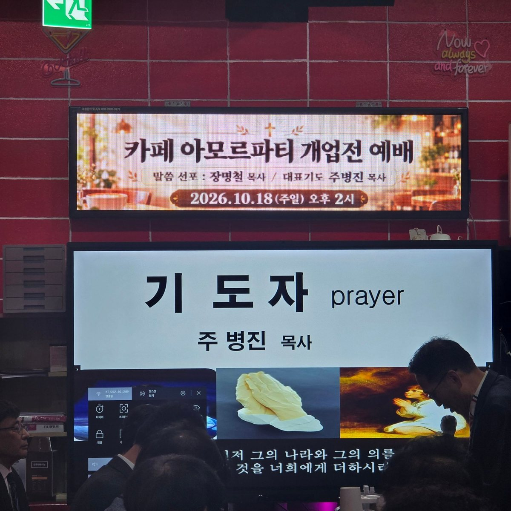
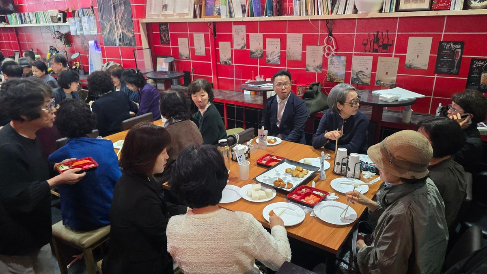
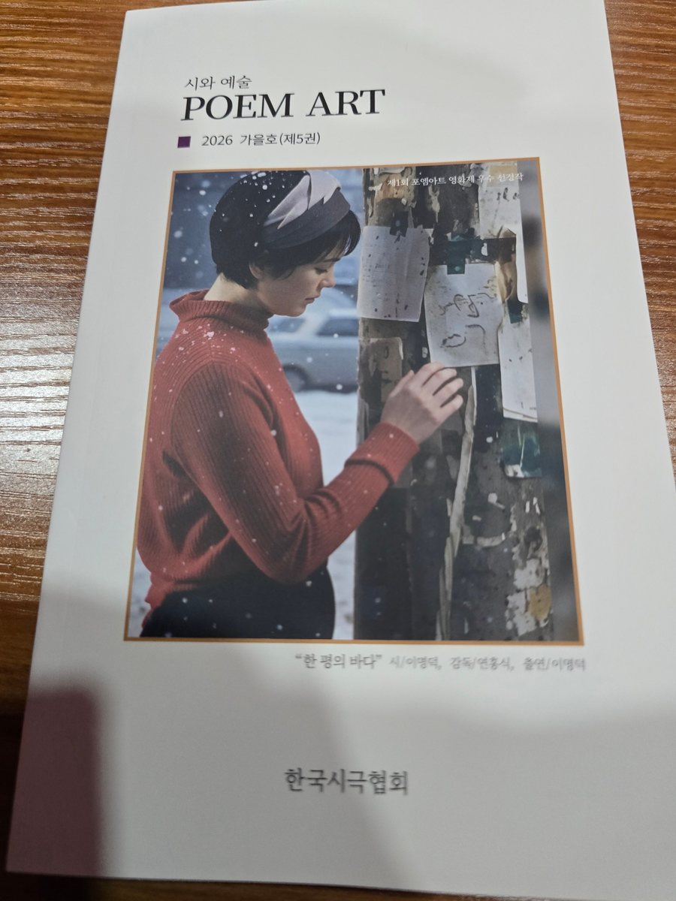
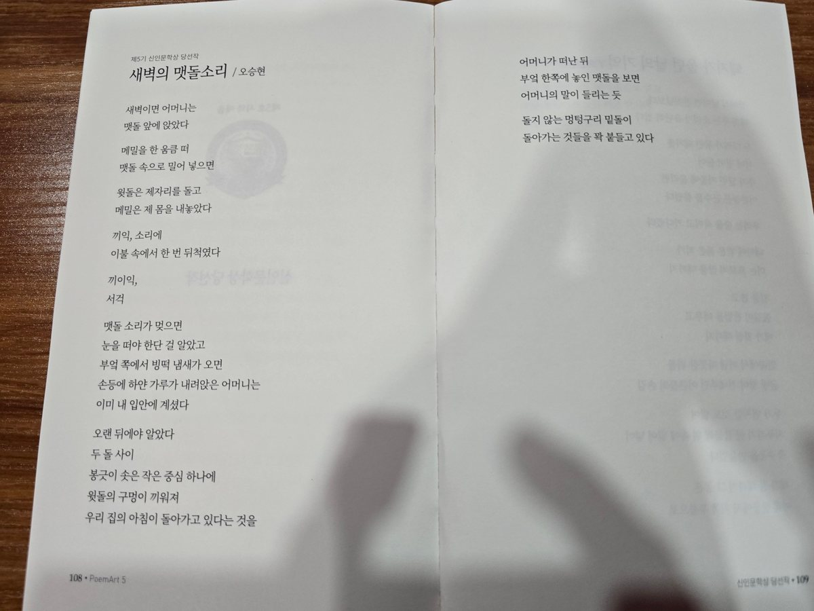
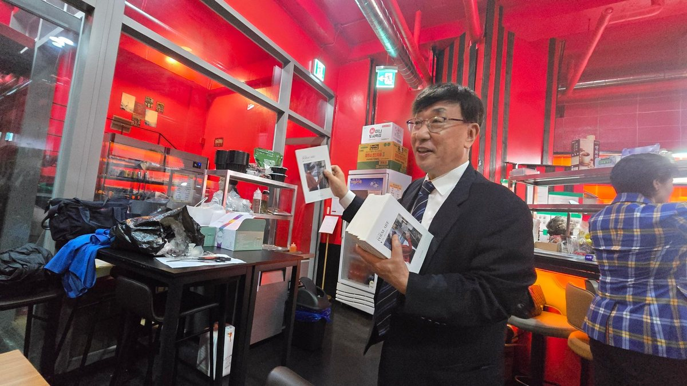
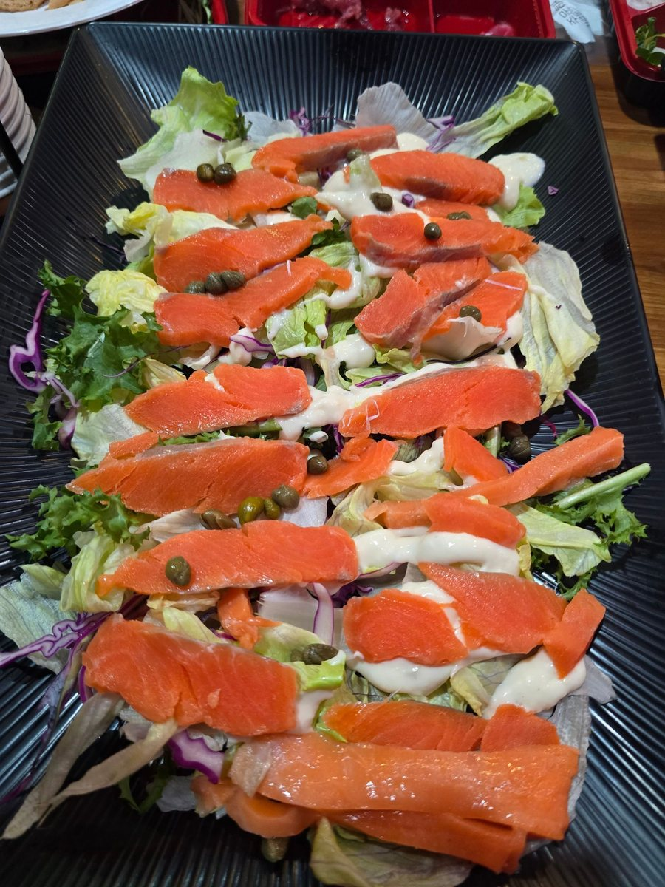
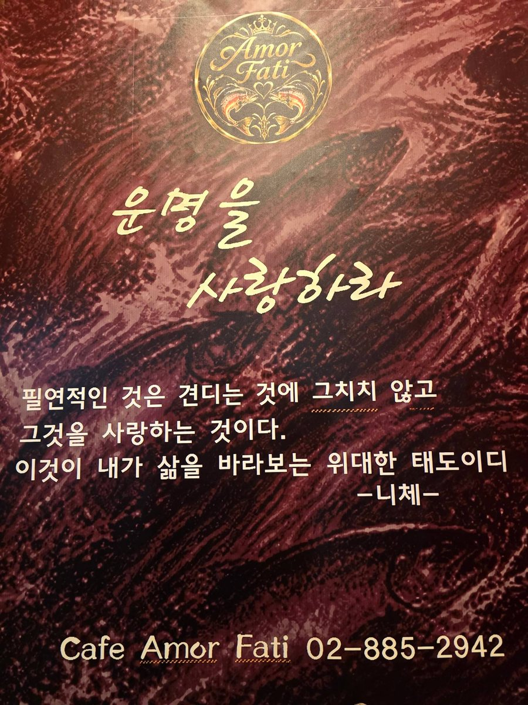

카페 아모르파티 개업 예배
2026. 10. 18 (주일)
10월 18일 오후 2시, 서울 서초구 방배천로 카페 아모르파티에서 개업 예배가 열렸습니다.
21일 그랜드 오픈을 사흘 앞두고 공간을 처음 연 자리였습니다.
예배는 엘 토브 비즈 선교회(EL TOV Biz Mission) 주관으로 진행됐습니다. 사회는 이범주 목사, 대표기도는 주병진 목사, 말씀 선포는 장명철 목사가 맡았습니다. 찬송과 사도신경, 묵상기도가 이어졌습니다.

좌석을 가득 채운 참석자들이 자리를 함께했습니다. 카페가 지향하는 모임의 첫 장면이기도 했습니다.

같은 자리에서 오승현 단장의 시 「새벽의 맷돌소리」가 소개됐습니다. 한국시극협회가 펴낸 『POEM ART』 2026 가을호(제5권)에 제5기 신인문학상 당선작으로 수록된 작품입니다.



다과로는 오픈 메뉴 일부를 먼저 내놓았습니다. 연어 샐러드와 연어·육회 도시락, 그리고 화순기정떡을 함께 나눴습니다.

카페 아모르파티는 10월 21일 수요일 정식 개업합니다. 아침의 모임부터 밤의 카페까지, 하루를 네 구간으로 나누어 운영합니다.

- 일시
- 2026년 10월 18일 (주일) 오후 2시
- 장소
- 카페 아모르파티 · 서울 서초구 방배천로 68 지하 1층
- 주관
- 엘 토브 비즈 선교회 (EL TOV Biz Mission)
- 말씀
- 장명철 목사
- 대표기도
- 주병진 목사
- 사회
- 이범주 목사
- 개업
- 2026년 10월 21일 (수)